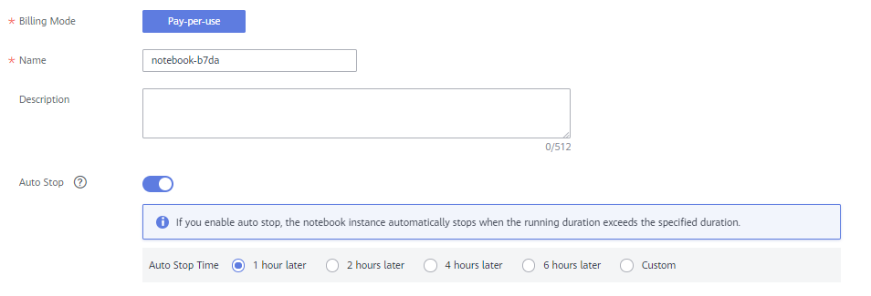

Before developing a model, create a notebook instance, open it, and perform encoding.
Background
- You will be charged as long as your notebook instance is in the Running status. We recommend you to stop the notebook instance when you no longer need it to prevent unnecessary fees. Alternatively, you can enable the auto stop function when creating a notebook instance so that the notebook instance can automatically stop at the specified time without incurring unnecessary fees.
- Only notebook instances in the Running state can be started.
- A maximum of 10 notebook instances can be created for an account. By default, the notebook instances created by the current user are displayed. If Display Only My Instances is disabled, all notebook instances created by the current account and its IAM users are displayed.
- If OBS storage is used, ensure that the OBS directory you use and ModelArts are in the same region.
- Before creating a notebook instance, learn about the AI engines supported by ModelArts and their versions.
Creating a Notebook Instance
- Log in to the ModelArts management console. In the left navigation pane, choose DevEnviron > Notebooks to switch to the Notebooks page.
- Click Create. On the displayed page, set the required parameters.
- Enter the basic information about the notebook instance, including the name, description, and whether to automatically stop the notebook instance. For details about the parameters, see Table 1.
Figure 1 Basic information about a notebook instance

Table 1 Parameters of basic informationParameter
|
Description
|
|---|
Name
|
Name of a notebook instance, which contains a maximum of 64 characters. Only digits, letters, underscores (_), and hyphens (-) are allowed. This parameter is mandatory.
|
Description
|
Brief description of a notebook instance.
|
Auto Stop
|
This function is enabled by default. The default value is 1 hour later, indicating that the notebook instance automatically stops after running for 1 hour and its billing stops.
The options are 1 hour later, 2 hours later, 4 hours later, 6 hours later, and Custom. You can select Custom to specify any integer from 1 to 24 hours.
|
- Set notebook parameters, such as the work environment and instance flavor. For details, see Table 2.
Table 2 Notebook instance parametersParameter
|
Description
|
|---|
Work Environment
|
Only public images, which are the AI frameworks built in ModelArts are supported.
All supported AI engines can be used in the same notebook instance. Different engines can be switched quickly and conveniently, and run in independent development environments. After the notebook instance is created, go to the Jupyter page to create the development environment with the desired AI engine. The AI engine varies depending on the operating environment. For details, see Supported AI Engines.
|
Resource Pool
|
Select Public resource pools or Dedicated resource pools. For details about the dedicated resource pools and how to buy them, see Resource Pools.
Public resource pools are available immediately after being provisioned. Dedicated resource pools are queue-free. When a large number of users use the public resource pool, they may queue for resources. Purchase a dedicated resource pool to improve development efficiency.
|
Type
|
The CPU and GPU types are supported.
|
Instance Flavor
|
If you select a public resource pool, available flavors vary depending on the selected type.
- If you select CPU for Type, available options include 2 vCPUs | 8 GiB and 8 vCPUs | 32 GiB.
- If you select GPU for Type, the available option is GPU: 1 x v100NV32 CPU: 8 vCPUs | 64 GiB.
- If you select Ascend for Type, available options include Ascend: 1 x Ascend 910 CPU: 24 vCPUs | 96 GiB and Ascend: 8 x Ascend 910 CPU: 192 vCPUs | 720 GiB.
|
Storage
|
The OBS options are available.
- Selecting OBS
Click Select next to the Storage Path text box to set the OBS path for storing notebook instance data. If you want to use existing files or data, upload the files or data to the corresponding OBS path in advance. Storage Path must be set to a specific directory in an OBS bucket rather than the root directory of the OBS bucket.
If you select this storage mode, all read and write operations on files on the notebook instances take effect on the data stored in your selected OBS path. To synchronize data in a file stored in OBS to a notebook instance, select the file and click Sync OBS. For details, see Synchronizing Files with OBS. There is no data loss after you restart this notebook instance.
|
- Click Next.
- After confirming the parameter configurations, click Submit.
Switch to the notebook instance list. Status of the notebook instance being created is Starting. If Status of the notebook instance changes to Running, the notebook instance has been created.